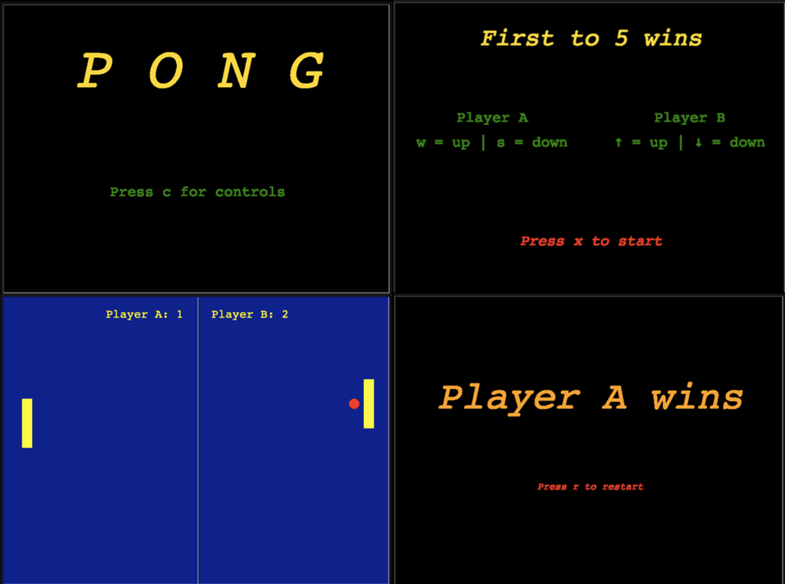
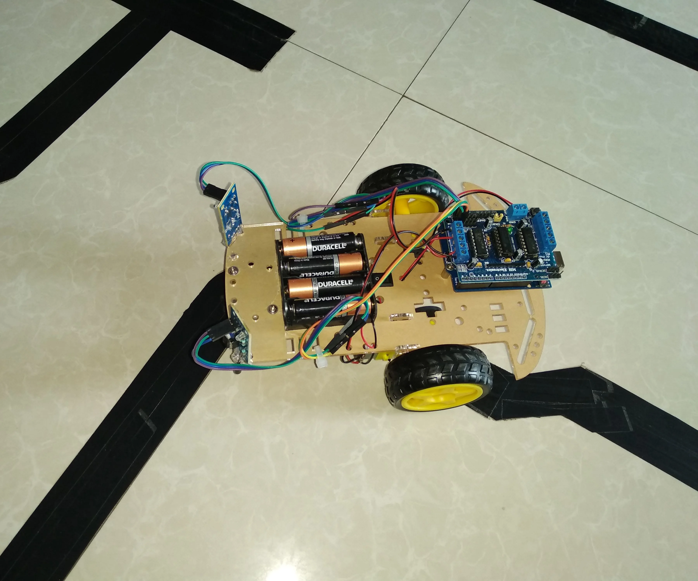
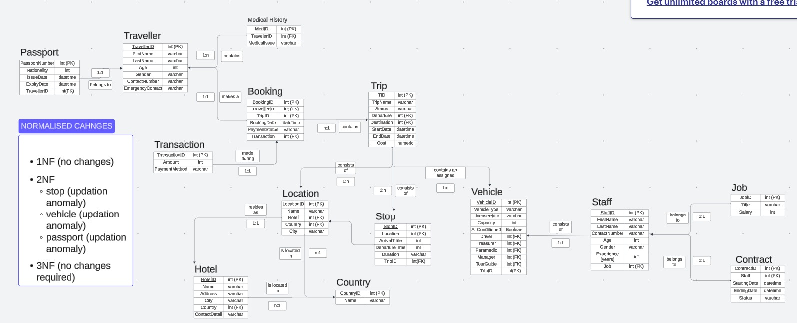
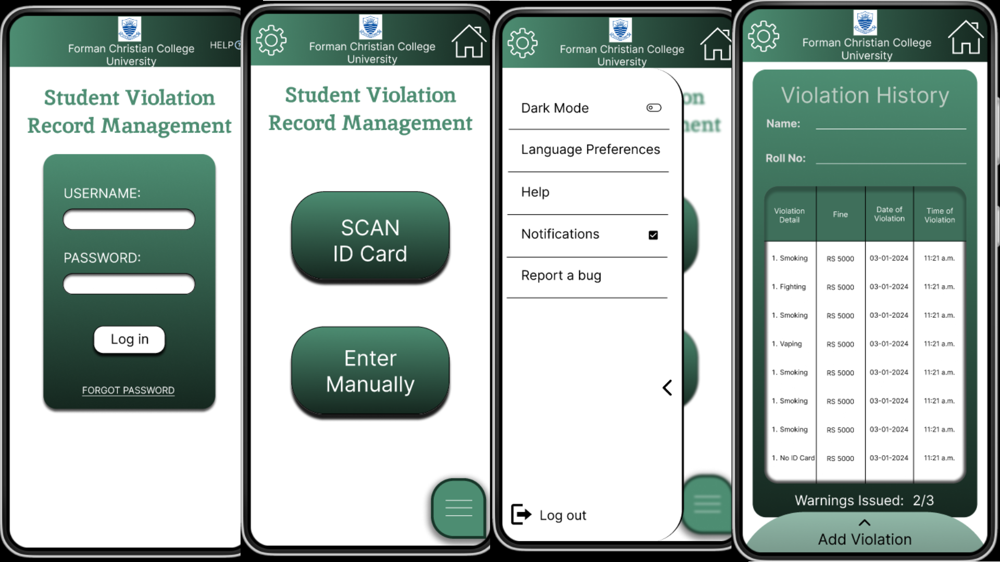
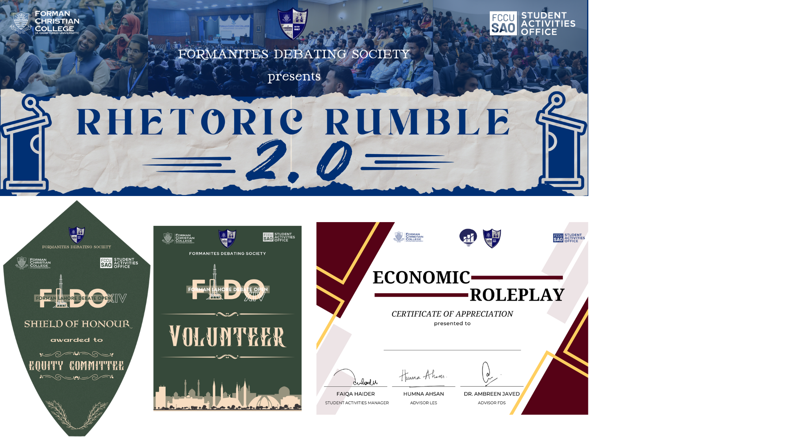

Pong Game - Python
- Initially a basic black and white, endless pong game
- Developed to be retro looking and sounding
- Added Win condition
- Multiple screens for Start, Controls and Win
- Added Pause and Restart Functionality

Line Following Robot
- Digital Logic Design Final Project
-
Robot with two infrared sensors detects between light and dark
path
- Taped path put down on a white background
- Time recorded for robot to complete the full path
-
Learned mechanical and software logic designs through this project

Trip Management Database
- SQL Database for managing a company that organises trips
-
Mulitple Locations, Hotels, Employees, Travellers and Trip (past
and future) records kept
-
Process started from creating ERD Diagram then creating
relationships and defining cardinalitites
-
Different Unique queries formulated from database such as 'Most
visited Country', 'Most loyal customer' etc
- Populated Database with around 15000 unique entries

University Behavioral Management App
-
Creating a Mobile App for University Proctorial Department for
effecient work and better judgement of students.
-
App can Add, Delete and Edit Violations on the go and allow for
Proctors to make better, more well informed decisions on the go.
-
Replaces old ways of keeping physical records in registers,
whatsapp groups etc and introduces a database that is entirely
dedicated to this task.
- App currently under development

Graphic Design
-
Currently working as a three person team for Graphics Department of Forman Debating Society (FDS).
-
Creating engaging social media posts for different events held by FDS.
-
Also includes creating graphics of sheilds, trophies, event banners, standies and posters.
